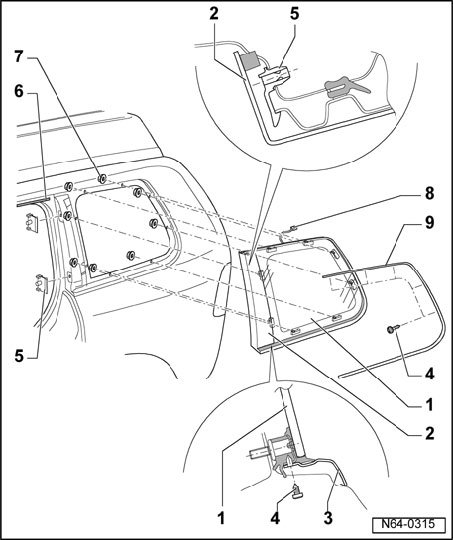

Side Windows - Assembly Overview
Side Windows - Assembly Overview

1 - Side window
- To remove side window, the molded headliner must first be removed
2 - C-pillar trim
- Trim is part of side window and is not to be replaced separately.
3 - Trim molding
4 - Screw
- Qty. 8
5 - Retaining clamp
6 - Drip deflector
7 - Flanged hex nut
- Qty. 8
- 4.5 Nm
- The torque must always be observed.
8 - Antenna connector
9 - Trim molding
- Secured with bolt -4- on side window.